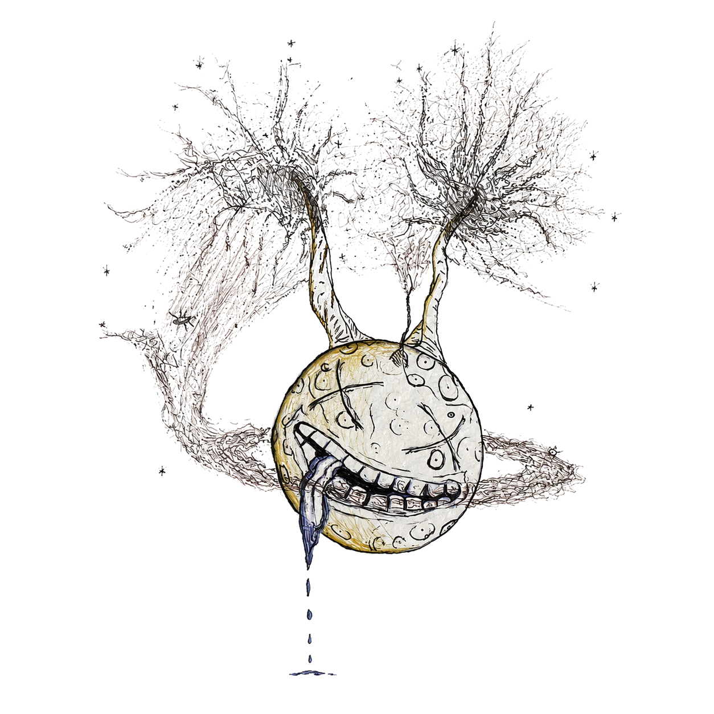

Current studies, trial records, mechanistic signals, and regulatory context connected to psilocybin, plasticity, mood, recovery, and related compounds.
This page collects newer studies, active trials, and regulatory records that may help orient future updates to the recovery map and neuroplasticity pages. The purpose is to track where the field is moving while keeping each item in its proper evidence category.
A federal executive order directed agencies to accelerate review pathways for qualifying psychedelic drugs, establish a Right to Try route for eligible patients, invest in state-matched psychedelic research, broaden clinical-trial participation, and prepare faster rescheduling review following successful Phase 3 trials and FDA approval.
In a prospective longitudinal study, people with methamphetamine use disorder underwent resting-state fMRI before and after psilocybin administered alongside psychotherapy. The researchers reported reorganization within and between attentional, default-mode, and salience networks, along with changes in local neural synchrony.
Greater reductions in methamphetamine use were associated with recovery of frontostriatal and attentional connectivity, while reductions in psychological distress correlated with stronger integration of attentional and prefrontal-striatal circuits.
Read the human imaging study Explore the open evidence bridge
A 6- and 12-month naturalistic follow-up extends the EPIsoDE treatment-resistant depression trial context. It is useful for durability questions, while the open follow-up period should be read differently from the blinded controlled phase.
Definium's Phase 3 Emerge trial studies a single oral DT120 dose in adults with major depressive disorder. Topline company results can guide attention, while peer-reviewed publication and regulatory review remain separate steps.
Depression research matters to recovery because mood, hope, avoidance, craving, and relapse vulnerability can reinforce one another. This thread connects clinical mood outcomes back to behavior-change support.
The Nature critical-period paper is useful for thinking about learning windows, social reward learning, and post-acute integration questions. Its direct evidence is in mice, so the human recovery implications remain questions for future study.
Recent reviews gather cellular, structural, functional, and clinical-model evidence for psychedelic-related plasticity. This supports the site's pathway layer while keeping model differences visible.
If psychedelics temporarily increase sensitivity to context, then preparation, support, setting, and integration become central recovery variables rather than side notes.
Researchers are studying defined psilocybin interventions for psychological distress and chemotherapy-related nerve injury. These studies do not establish that whole psilocybin mushrooms treat cancer or shrink tumors.
Agrawal and colleagues (2025) followed a 30-person study of psilocybin with psychological support for cancer patients with major depression. Among 28 assessed at two years, 15 (53.6%) had a substantial reduction in depression and 14 (50%) met the study's sustained-response criterion.
Evidence boundary: the follow-up had no control group. It suggests that improvement can persist for some patients, but cannot establish that psilocybin alone caused the lasting benefit.
Margaret L. Ross and colleagues (2025) randomized 35 adults to psilocybin or an active placebo, both with psychotherapy. Several depression and anxiety measures favored psilocybin at six to seven weeks. Participants had life-threatening illnesses, including conditions other than cancer.
Evidence boundary: this was a small, single-site trial. Everyone was subsequently offered psilocybin, so the later follow-up does not provide a continuing placebo comparison. Mild-to-moderate adverse events were more frequent with psilocybin; one participant withdrew because of anxiety during dosing.
Downar and colleagues' PSYCHED-PAL study (2026) explored repeated low doses over three weeks for psychological and existential distress in advanced illness. Of 17 participants who began treatment, 13 completed it; 82% of those starting had cancer. Nine completers reported meaningful overall improvement.
Evidence boundary: the small study had no blinding or comparison group, and four participants stopped because of disease progression or lack of response. These are preliminary feasibility findings, not established evidence that microdosing is effective.
A Science study reported that psilocybin given before chemotherapy protected sensory nerve endings and touch sensation and prevented cold hypersensitivity in mouse models, including across repeated treatment cycles. These findings concern prevention of chemotherapy-induced peripheral neuropathy (CIPN), rather than reversal of established nerve injury.
Mechanistic notes: the experiments implicated peripheral serotonin 5-HT2A signaling and preservation of mitochondrial movement and distribution within nerve fibers. Blocking the receptor pathway removed the protective effect; a non-hallucinogenic agonist produced similar protection in the experimental models.
Heles and colleagues reported protection across platinum- and taxane-based chemotherapy models without impairing antitumor efficacy in the tested models. Preserving mitochondrial transport helps keep energy supplies distributed along nerve fibers; this finding does not establish compatibility with cancer treatments in people.
Open DOI Read the institutional research record Read MD Anderson's study summary
MD Anderson is studying psilocybin-assisted psychotherapy for depression and/or anxiety in people with advanced cancer on maintenance therapy. The trial also tracks quality of life, meaning, inflammatory markers, and fMRI network measures.
NeuroGuard asks whether psilocybin can help prevent or decrease chemotherapy-induced peripheral neuropathy. This is best read as an active clinical hypothesis in trial form while results are still pending.
Registry entries are valuable because they show study design, outcomes, safety screening, and exclusion criteria. They should be separated from completed evidence until results are available.
One emerging thread sits adjacent to psilocybin research: mushroom-associated compounds and brain-health markers. Ergothioneine appears in food and mushroom research and is biologically interesting as an antioxidant-related metabolite.
A Nature Aging blood-metabolome study reported replicated associations between midlife blood metabolites and brain-health measures, with ergothioneine standing out in the analysis. The useful takeaway is an association signal that can guide future prevention and mechanism questions.
This is a natural bridge toward a future functional mushrooms page, where compounds such as ergothioneine can be handled separately from psilocybin and psychedelic therapy research.
Functional mushroom chemistry, psychedelic therapy, and recovery research can inform one another, but they should stay distinct enough that readers can see which compound and evidence type is being discussed.
A 2025 analysis of pristine material returned from asteroid Bennu reported a tentative trace detection of tryptophan. If confirmed, it would be the first detection of tryptophan in extraterrestrial material. The Bennu samples also preserve a much wider inventory of amino acids, nucleobases, and other prebiotic organic compounds.
On Earth, tryptophan is an essential amino acid and a biological starting material for serotonin, melatonin, and fungal tryptamine biosynthesis, including the pathway that produces psilocybin. Its possible presence on Bennu does not demonstrate extraterrestrial psychedelics. It suggests that a chemical building block later incorporated into these biological pathways can arise through nonbiological chemistry in primitive planetary bodies.
Eli Lilly and Company has entered a definitive agreement to acquire AtaiBeckley for approximately $2.8 billion in upfront equity value, with up to $1 billion more tied to specified clinical and regulatory milestones. The transaction remains subject to its closing conditions.
AtaiBeckley’s lead program, BPL-003, is an investigational intranasal formulation of synthetic 5-MeO-DMT as mebufotenin benzoate for treatment-resistant depression. It has received FDA Breakthrough Therapy designation, and the company reports that Phase 3 development activities have begun.
Read the acquisition announcement Consider ownership and access
The FDA has scheduled a public hearing for September 14, 2026, from 12:30 to 4:30 p.m. ET to gather perspectives on potential future therapeutic use of psychedelic drug products in supervised and supportive settings. Attendance is available in person or by webcast.
Written-comment deadline: October 5, 2026, at 11:59 p.m. ET through the electronic submission system linked from the FDA event page. Hearing attendance and written comments are separate participation routes.
Spravato is an FDA-approved esketamine nasal spray for treatment-resistant depression in adults, as monotherapy or with an oral antidepressant, with REMS supervision and monitoring requirements. It is an NMDA-antagonist dissociative rather than a classic serotonergic psychedelic.
The DEA controlled-substances list identifies psilocybin and psilocin as Schedule I substances at the U.S. federal level. State and clinical access models can differ, so federal status and local frameworks need to be read separately.
Clinical trials, special access, decriminalization, regulated services, and full commercial legalization are different access models. Keeping those categories separate makes the policy discussion more useful.
Louisiana Act 956 establishes a Psychedelic-Assisted Therapy Initiative within the Department of Health. It supports federally authorized studies involving ibogaine, MDMA, psilocybin, related therapeutics, and mechanistically similar analogues for opioid-use disorder, co-occurring substance-use disorders, and treatment-resistant neurological or mental-health conditions.
Participating academic health centers must coordinate with parishes to use opioid-settlement funds to enroll eligible residents. The state may also encourage those funds as matching support for clinical and trial-enabling research, while seeking federal funds, grants, gifts, and donations.